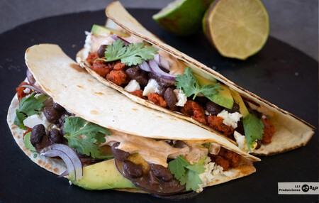
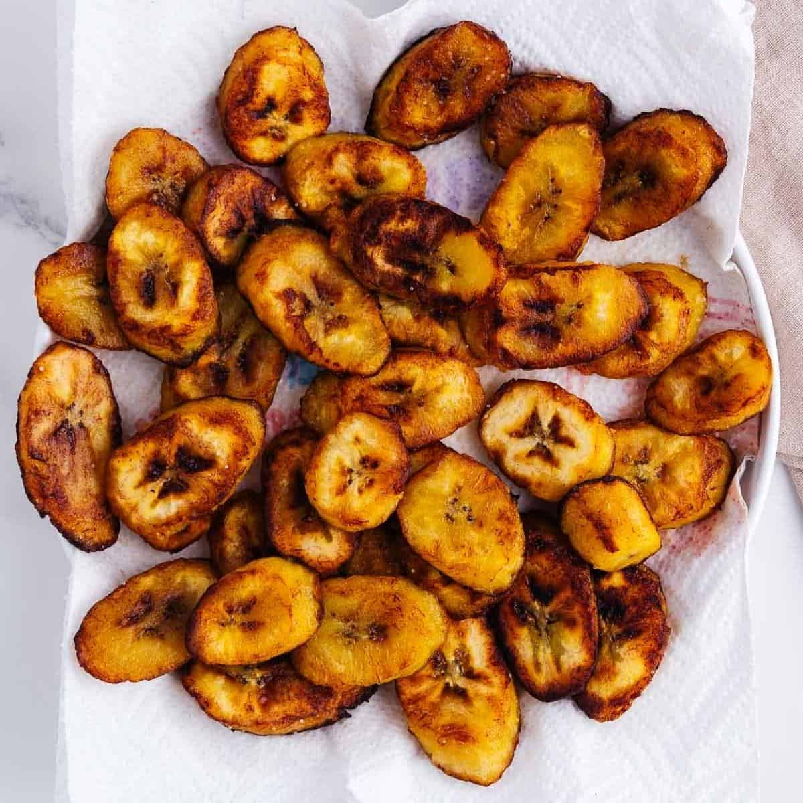

Honduran cuisine is the result of a fascinating and delicious mix of cuisines of geographic proximity and historical proximity. It’s a combination of Mesoamerican, Spanish, Caribbean, African, and Garifuna cuisines. Honduran cuisine is delicious, colorful, and full of variety. Most meals include corn, beans, rice, tortillas, fruit, and seafood. Some typical Honduras dishes are baleadas, platanos fritos, pan de coco, pastelitos, and Honduran cassava cake.
Baleadas are thick flour tortillas filled with fried beans, cheese, sour cream, avocado,
some kind of meat, and eggs. It is eaten as breakfast, lunch, or dinner.

Platanos Fritos are fried plantain cut into fourths, fried until golden brown, then served with sour cream. This is typically a side dish.

Pan de Coco is a sweet and airy coconut-flavored buns that are dairy-free and eggless. They are made using coconut milk and eaten with stews or just on their own.
Pastelitos are crisp turnover-like pastries that are filled with meat, rice, and spices.
Honduran cassava cake is a local desser. Flavored with warm spices, milk, coffee, and vanilla extract but the cake itself isn’t overly sweet. However, the condensed milk that is topped with adds the sweetness.